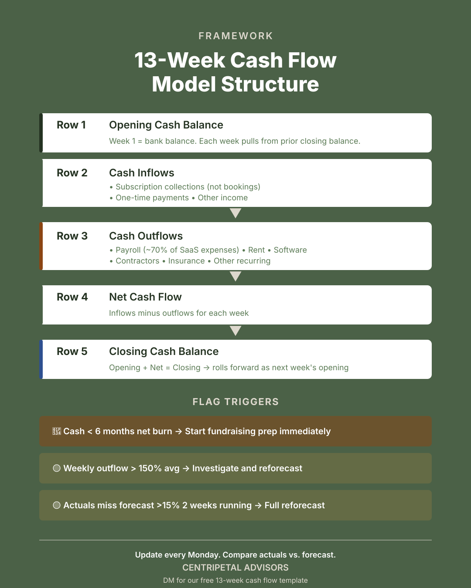

What the 13-week forecast does well
A 13-week cash flow forecast shows the near-term timing of cash inflows and outflows at a weekly resolution. It makes payroll, rent, debt service, vendor payments, and expected collections visible on a calendar.
For companies with variable collection timing, seasonal patterns, or upcoming capital commitments, it is the clearest view of whether cash on hand will cover obligations over the next quarter.

What it does not show
The 13-week model is a timing instrument, not a judgment instrument. It shows when cash moves. It does not always explain which commitments are reversible, which collections are at risk, or what management would do if the downside case became the base case.
Specifically, it often hides: the distinction between committed and discretionary spend, the gap between invoiced and collected revenue, covenant trigger dates and response plans, and the decision points where management would change behavior.
How lenders read it differently
Founders build the 13-week forecast to plan operations. Lenders read it to test downside resilience.
A lender wants to know: what happens if your largest customer pays 30 days late? What happens if you move forward with a planned hire and collections slip? What is the first expense you would cut if cash dropped below a threshold?
If the model does not answer these questions, it is not lender-ready.
How to fill the gaps
Separate committed from discretionary spend. Show AR aging alongside the forecast. Add covenant triggers and response actions directly into the model. Run three scenarios — base, delayed collections, and slower growth — tied to specific management decisions.
The forecast becomes useful for capital conversations when it shows judgment, not just arithmetic.
Frequently asked questions
What is a 13-week cash flow forecast?
A weekly projection of cash inflows and outflows over the next 13 weeks, showing when payroll, vendor payments, debt service, and expected customer collections will hit the bank account.
Why do lenders require a 13-week cash flow forecast?
Lenders use it to test whether the company can service its obligations under normal and stressed conditions. They read it for downside resilience, not just base-case timing.
What should be included beyond the basic forecast?
Committed versus discretionary spend separation, AR aging detail, covenant triggers with response actions, and three scenarios — base, delayed collections, and slower growth — tied to specific management decisions.
Put this into practice
Make the topic part of the operating cadence, not a one-time cleanup project. Assign one owner, identify the source system for every number, and decide how often the underlying schedule will be refreshed. The goal is a repeatable answer that does not change depending on who prepares the deck or which spreadsheet is open.
At each review, reconcile the operating view to the accounting view and document any difference. A useful review note states what changed, why it changed, whether the variance is timing or performance, and what decision follows. That discipline is what makes a metric or process usable in a board meeting, financing conversation, or diligence request.
Questions to resolve before the next review
- Who owns the number or process, and what system is the source of truth?
- What definition is used consistently across the model, reporting package, and board deck?
- Which variance would trigger a decision rather than another round of analysis?
- What supporting schedule should a lender or investor be able to inspect?
Need help building a lender-ready cash flow model?
Schedule a Conversation